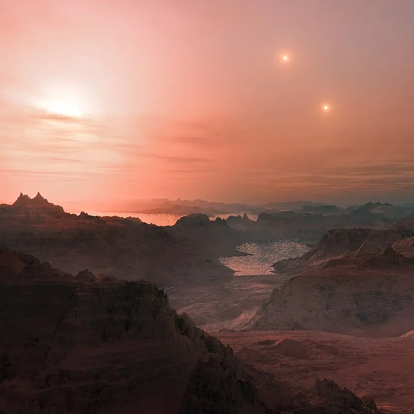

GJ 667 Cc — Exoplaneta

Introdução e História
GJ 667 Cc, também chamado de Gliese 667 Cc, é um exoplaneta do tipo super-Terra que orbita a estrela anã vermelha Gliese 667 C, membro de um sistema triplo de estrelas a cerca de 22 anos-luz da Terra.
Descoberto por meio de medições de velocidade radial com o espectrógrafo HARPS em 2011 e anunciado em 2012, ele foi rapidamente destacado como um dos exoplanetas mais promissores para abrigar água líquida em sua superfície.
Características Físicas: Massa, Tamanho e Órbita
GJ 667 Cc é uma super-Terra com massa mínima estimada em cerca de 4,4 vezes a massa da Terra, indicando um planeta significativamente mais massivo que o nosso.
Ele orbita sua estrela em cerca de 28 dias terrestres a uma distância de aproximadamente 0,125 UA, resultado da proximidade com sua estrela hospedeira, que é muito menos luminosa que o Sol.
Devido à órbita próxima, o planeta provavelmente está trancado por maré, mostrando sempre o mesmo lado para a estrela — um padrão comum em mundos próximos de estrelas anãs vermelhas.
Potencial de Habitabilidade
- 💧 Zona Habitável: GJ 667 Cc está dentro da zona habitável de sua estrela, onde temperaturas superficiais podem permitir água líquida sob condições adequadas.
- 🔥 Energia Estelar: O planeta recebe cerca de 90% da energia que a Terra recebe do Sol, embora a maior parte esteja no infravermelho devido à estrela ser fria.
- 🌡️ Temperatura Estimada: Modelos sugerem uma temperatura de equilíbrio ao redor de 277 K (≈4 °C), colocando-o em uma faixa onde a água líquida poderia existir.
Esses fatores fizeram de GJ 667 Cc um dos exoplanetas mais estudados em termos de habitabilidade fora do Sistema Solar, embora ainda não se saiba se ele possui atmosfera ou condições climáticas que permitam efetivamente vida complexa.
Curiosidades
GJ 667 Cc orbita uma estrela que faz parte de um sistema triplo, com duas outras estrelas mais distantes influenciando o céu noturno local.
Se um dia fosse possível observar o céu da superfície (com uma atmosfera adequada), as duas estrelas mais distantes poderiam aparecer como pontos brilhantes adicionais no firmamento.
A projeção artística da imagem usada mostra um pôr do sol em Gliese 667 Cc, sugerindo um espetáculo visual distinto de qualquer coisa vista na Terra.
Origem do Nome
O nome “GJ 667 Cc” segue a convenção astronômica científica: ele combina o nome da estrela hospedeira (GJ 667 C) com uma letra (“c”) seguida de outra (“c”) para indicar que é o terceiro corpo no sistema identificado nessa órbita. Não há mito associado — é uma nomeação puramente científica usada em catálogos astronômicos.
Referências
- Wikipedia. GJ 667 Cc. Disponível em: https://pt.wikipedia.org/wiki/Gliese_667_Cc. Acesso em: 27 dez. 2025.
- ESO/ESA. Gliese 667 Cc — Imagem Artística. Disponível em: https://pt.wikipedia.org/wiki/Ficheiro:Gliese_667_Cc_sunset.jpg. Acesso em: 27 dez. 2025.